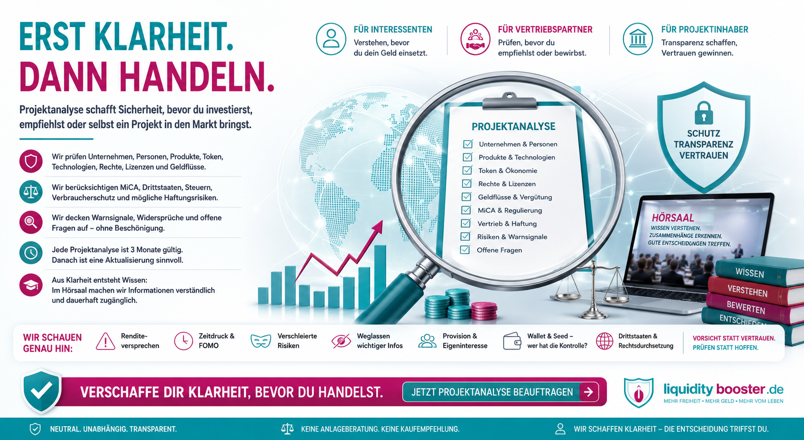

Projektanalyse – erst Klarheit. Dann handeln.
Bevor Geld eingesetzt, ein Projekt empfohlen oder ein Angebot über Vertriebspartner in den Markt gebracht wird, sollte klar sein, was tatsächlich dahintersteht. Eine Projektanalyse schafft eine nachvollziehbare Informationsgrundlage – für Verbraucher, Vertrieb und Projektinhaber.
Warum Projektanalysen heute wichtiger sind
International, digital und oft schwer überprüfbar
Ein professioneller Internetauftritt, überzeugende Videos, große Communities, bekannte Empfehlungsgeber oder eine starke Präsentation sind noch kein Beleg dafür, dass ein Geschäftsmodell, ein Unternehmen oder ein Finanz- beziehungsweise Kryptoprojekt vollständig verstanden und geprüft wurde.
Die Welt ist international geworden
Unternehmen können in einem Staat gegründet sein, Technik in einem zweiten Staat betreiben, Vertriebspartner in Deutschland einsetzen und Kunden in der gesamten EU ansprechen. Dadurch werden Vertragspartner, Aufsicht, Rechtsweg und Durchsetzbarkeit schnell komplex.
Täuschung wirkt professioneller
Webseiten, Social Media, Messenger, KI-generierte Inhalte, Fake-Identitäten und professionelles Marketing können Vertrauen erzeugen. Gerade deshalb muss zwischen Außendarstellung und überprüfbaren Tatsachen unterschieden werden.
Der Grundsatz: Professionelles Auftreten ist kein Nachweis. Bekanntheit ist kein Nachweis. Eine Empfehlung ist kein Nachweis. Klarheit entsteht erst durch Prüfung.
Die Gefahrenlage ist real – und international
BKA-Zahlen 2024 sauber eingeordnet
Das Bundeskriminalamt weist für 2024 743.472 registrierte Betrugsfälle mit Inlandsbezug aus. Hinzu kamen 513.518 Betrugsfälle, die aus dem Ausland heraus begangen wurden und bei denen der Vermögensschaden in Deutschland eintrat. Die Aufklärungsquote bei Betrugskriminalität aus dem Ausland lag bei nur 5,1 Prozent.
Drei Perspektiven – ein gemeinsames Interesse
Verbraucher, Vertrieb und Projektinhaber
Interessent / Investor
Verstehen, bevor Geld eingesetzt wird. Wer ist der Vertragspartner? Was wird gekauft? Welche Risiken, Kosten, Genehmigungen und Rechtswege bestehen?
Vertrieb / Empfehlungsgeber
Prüfen, bevor ein Projekt anderen empfohlen wird. Welche Aussagen sind belegbar? Welche Tätigkeit wird tatsächlich ausgeübt? Woran wird verdient? Welche Verantwortung kann daraus entstehen?
Projektinhaber / Unternehmen
Belegen, bevor Vertrauen verlangt wird. Ein transparent arbeitendes Unternehmen kann eine Analyse nutzen, um Nachvollziehbarkeit, Struktur und Reputation zu stärken.
Das gemeinsame Interesse: nachvollziehbare Transparenz, bevor Menschen Entscheidungen treffen.
Verbraucher: Schutz beginnt vor der Entscheidung
Nicht erst reagieren, wenn das Geld weg ist
Eine Empfehlung durch einen Menschen, dem man vertraut, ersetzt keine Projektprüfung. Gerade im Freundes-, Bekannten- oder Community-Umfeld werden Entscheidungen häufig auf Basis persönlicher Glaubwürdigkeit getroffen.
Vertrieb: Nähe ist kein Freibrief
Aussagen, Verschweigen, Provision und tatsächliche Rolle zählen
Viele Projekte verbreiten sich über Freunde, Bekannte, Affiliates, Community-Mitglieder oder Vertriebspartner. Gerade diese persönliche Nähe erzeugt besonderes Vertrauen. Wer andere zu einer finanziellen Handlung bewegt, sollte sehr genau wissen, was er behauptet, was er weglässt, woran er verdient und welche Rolle er tatsächlich übernimmt.
Die unbequeme Frage: Hättest du deinem Freund das Projekt genauso empfohlen, wenn du dafür keine Provision erhalten würdest – und hast du ihm die Risiken genauso deutlich erklärt wie die Chancen?
Besonders kritisch: Wallet, Seed und Handeln für andere
Wenn aus Erklärung technische Kontrolle wird
Eine Empfehlung bekommt eine andere Qualität, wenn der Empfehlungsgeber nicht nur spricht, sondern für einen unerfahrenen Menschen die technische Kontrolle übernimmt.
Nicht nur erklären
Wer Wallets anlegt, Seed-Phrases kennt oder verwahrt, Konten einrichtet, Käufe vorbereitet, Smart Contracts verbindet oder Transaktionen selbst ausführt, übernimmt faktisch deutlich mehr als die Rolle eines bloßen Hinweisgebers.
Empfehlung + Kontrolle + Provision
Besonders sensibel ist die Kombination aus persönlicher Empfehlung, wirtschaftlichem Eigeninteresse und technischer Kontrolle. „Ich war nur Empfehlungsgeber“ kann den tatsächlichen Ablauf dann unzutreffend beschreiben.
Was das Recht dabei grundsätzlich unterscheidet
Täuschung, Beihilfe und Schadensersatz
Betrug – § 263 StGB
Der Betrugstatbestand erfasst unter seinen Voraussetzungen nicht nur das Vorspiegeln falscher Tatsachen, sondern auch die Entstellung oder Unterdrückung wahrer Tatsachen, wenn dadurch ein Irrtum und Vermögensschaden herbeigeführt werden und die weiteren Tatbestandsmerkmale vorliegen.
Beihilfe – § 27 StGB
Wer vorsätzlich Hilfe zu einer vorsätzlich begangenen rechtswidrigen Tat leistet, kann als Gehilfe strafbar sein. Eine Provision allein macht niemanden automatisch zum Mittäter oder Gehilfen; Wissen, Vorsatz und konkrete Unterstützung sind entscheidend.
Zivilrechtlicher Schadensersatz – § 826 BGB
Wer einem anderen vorsätzlich in sittenwidriger Weise Schaden zufügt, kann zum Schadensersatz verpflichtet sein. Ob dies im Einzelfall greift, hängt von den konkreten Tatsachen und dem Nachweis ab.
Deshalb prüft man vorher: Wer ein Projekt bewirbt, sollte nicht erst dann herausfinden, was er tatsächlich vertrieben, versprochen oder für andere durchgeführt hat, wenn Menschen bereits Geld verloren haben.
MiCA: Neue europäische Spielregeln
Marketing, Dienstleister und Risiken
Mit MiCA ist der europäische Kryptomarkt deutlich stärker reguliert. Für erfasste Angebote und Kryptowerte-Dienstleistungen spielen unter anderem Zulassung, Transparenz, Marketingkommunikation, Whitepaper und Risikohinweise eine Rolle.
Marketing
MiCA verlangt bei erfasster Marketingkommunikation, dass sie als solche erkennbar sowie fair, klar und nicht irreführend ist. Wo ein Whitepaper vorgeschrieben ist, muss die Kommunikation damit konsistent sein.
Kryptowerte-Dienstleister
MiCA verpflichtet erfasste Kryptowerte-Dienstleister dazu, ehrlich, fair und professionell im besten Interesse ihrer Kunden zu handeln und über Risiken zu informieren.
Kein Sicherheitsstempel
Regulatorische Einordnung oder Zulassung bedeuten nicht, dass ein Token, Projekt oder Geschäftsmodell wirtschaftlich sicher oder erfolgreich ist.
Firma außerhalb der EU – Kunde innerhalb der EU
Drittstaaten und Reverse Solicitation
Der Satz „Unsere Firma sitzt außerhalb der EU, deshalb gelten EU-Regeln nicht“ ist zu pauschal. Bei Kryptowerte-Dienstleistungen ist unter MiCA insbesondere relevant, ob ein Drittstaatenanbieter EU-Kunden aktiv anspricht oder ob eine Dienstleistung tatsächlich ausschließlich auf Initiative des Kunden erfolgt.
Hat der Kunde das Projekt gefunden?
Reverse Solicitation ist eine enge Ausnahme. ESMA hat Leitlinien veröffentlicht, um ihre Anwendung und mögliche Umgehungen zu konkretisieren.
Oder hat das Projekt den Kunden gefunden?
Werbung, Promotion, Vertriebspartner, Empfehlungslinks, Social Media, Veranstaltungen oder andere Formen aktiver Ansprache können für die regulatorische Bewertung relevant sein.
Die praktische Frage: Wenn morgen mein Geld nicht mehr erreichbar ist – gegen wen richte ich meinen Anspruch, in welchem Land und wie realistisch ist eine tatsächliche Vollstreckung?
Warnsignale erkennen
Nicht jeder Hinweis beweist Betrug – aber er erhöht den Prüfbedarf
Transparenz fehlt
Unklare Gesellschaften, schwer prüfbare Verantwortliche, fehlende Registerdaten, unklare Genehmigungen oder widersprüchliche Angaben.
Marketing ersetzt Fakten
Starke Renditeversprechen, Zeitdruck, Angstbotschaften, einseitige Chancenkommunikation oder fehlende Risikodarstellung.
Geldflüsse bleiben unklar
Nicht nachvollziehbare Zahlungswege, unklare Verwahrung, zusätzliche Zahlungen für angebliche Freischaltungen oder Auszahlungen.
Vertrieb ohne klare Grenzen
Vertriebspartner versprechen Erträge, übernehmen Wallets oder Transaktionen und können Risiken oder regulatorische Einordnung selbst nicht erklären.
Was eine Projektanalyse prüft – und was nicht
Faktenbasis statt Kaufempfehlung
Eine moderne Projektanalyse betrachtet das Gesamtbild: Unternehmen, Personen, Register, Produkt, Geschäftsmodell, Geldflüsse, Vergütung, Marketing, Rechtsrahmen, MiCA, Token, Drittstaaten, Vertrieb, Verbraucherschutz, öffentlich bekannte Warnungen, Risiken, Widersprüche und offene Fragen.
Jede Projektanalyse ist drei Monate gültig
Eine Analyse ist eine Momentaufnahme
Unternehmen und Projekte verändern sich. Geschäftsmodelle, Verantwortliche, Produkte, Vergütungspläne, Genehmigungen, regulatorische Anforderungen und Vertriebswege können sich innerhalb weniger Monate neu ausrichten.
Auch eine Analyse selbst kann Verbesserungen anstoßen. Ein Unternehmen kann offene Punkte klären, Transparenz schaffen und Strukturen verändern. Deshalb darf eine frühere Bewertung nicht unbegrenzt fortgeschrieben werden.
Von der Projektanalyse zum Hörsaal
Aus Klarheit wird ein dauerhafter Bildungsraum
Die Projektanalyse schafft Klarheit. Der Hörsaal macht diese Klarheit dauerhaft nutzbar – für Interessenten, Vertriebspartner und Projektinhaber.
Fakten & offene Fragen
Verstehen & einordnen
Wissen dauerhaft zugänglich
Mehrwert für alle: Der Interessent bekommt Orientierung, der Vertrieb eine nachvollziehbare Informationsgrundlage und ein transparent arbeitendes Unternehmen kann seine Struktur und Reputation sichtbar machen.
Offizielle Quellen zum Nachlesen
BKA, ESMA und deutsche Gesetzestexte
Erst Klarheit. Dann handeln.
Du möchtest investieren, ein Projekt weiterempfehlen oder dein eigenes Projekt über Vertriebspartner in den Markt bringen? Verschaffe dir zuerst eine belastbare Informationsgrundlage.